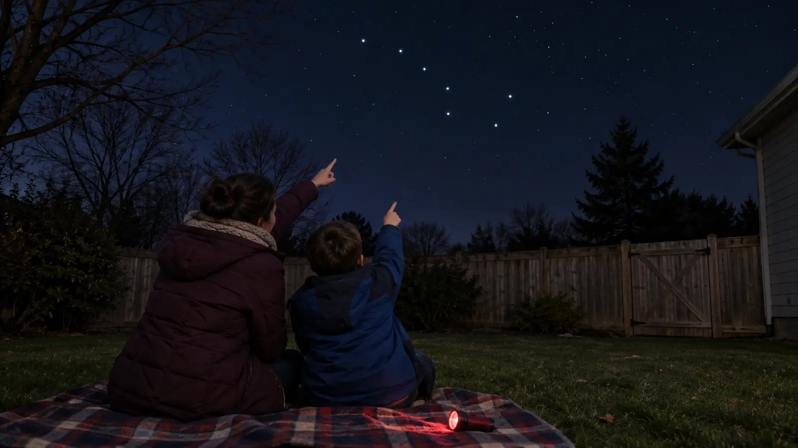

Direction
Choose north, east, south or west while it is still light. Use a known landmark and a compass only as a check. Do not tell children Polaris is always visible.
SCHOOL NIGHT · NO-SPEND · EXPLORATION
Do not buy a telescope and do not wait for a perfect dark-sky trip. Use a safe familiar spot, learn one direction, notice one pattern, and quit at 20 minutes.

A first family stargazing night does not need a telescope, an app subscription or a midnight meteor-shower drive. It needs one safe familiar viewing spot, warm clothes, a clock and a single question. The goal is not to identify the universe. The goal is to look long enough for the sky to stop feeling like a black ceiling.
This plan takes 20 minutes outside, plus a five-minute daylight scout. It works from a yard, porch, apartment courtyard or legal public space with a useful patch of sky. City light will hide faint stars, but bright patterns, the Moon and some planets can still be worthwhile. NASA’s guidance says the unaided eye is often the best first observing tool because it takes in a broad sky.
NASA recommends scouting a stargazing site during daylight, verifying legal access, staying safely away from the road, and noticing rocks, branches, slopes and wildlife hazards. A backyard still needs that check.
NASA explains that Polaris sits close to the north celestial pole and appears roughly north in the Northern Hemisphere. The two stars at the end of the Big Dipper’s cup point toward it when that pattern is visible. Polaris is not the brightest star, the Big Dipper can be blocked by buildings or seasonal position, and clouds erase the whole lesson.
Use this as a sky-orientation exercise in a safe known place. Do not use a star sighting instead of a map, compass, GPS, legal trail plan or adult route judgment. If the family cannot confidently identify the pattern, say “not tonight” and use a current chart. Guessing is not astronomy.
NASA recommends minimizing bright phone and flashlight use and says dim red light has less impact on night vision. A red-capable lamp can help with a chart or exit, but it does not make hazards visible at distance and it is not automatically the correct emergency light. Use normal white light immediately whenever footing, an animal, another person or an emergency requires it.
If the household already owns a suitable light, use the lowest safe setting. The family lighting guide explains why moving people need hands-free light, while this activity’s default is to sit. No purchase is required. A red-light phone setting is optional, but put the device away after the chart check.
If binoculars are already available, use them only after the unaided-eye target is found, and only while stationary. Never look at the Sun or aim optics near it. The family binocular fit guide covers eye spacing and merged-view checks. Skip optics for a restless child or crowded space.
The basic version costs nothing: use eyes, ordinary weather clothes, an existing blanket and a current free NASA guide. Do not buy a telescope for a 20-minute first try. Use the restroom before coats go on. Skip snacks outside unless the household needs one; eating in darkness adds crumbs, dropped wrappers and distraction. If water comes out, use a closed bottle and carry it back in.
Clouds: use the NASA page indoors, draw the Big Dipper’s seven main points, then compare with another clear night. Cold: observe through a safe window with room lights off behind you; never lean or climb for a better view. Low energy: step outside for five minutes, find the Moon or the brightest visible point, and stop. No visible target: begin the seven-night Moon log on the next clear evening.
Do not drive to a remote pull-off because the yard is cloudy. Weather can differ, but a school-night reset should not become an unscouted roadside mission. The weather cutoff plan still applies after dark.
Keep lights, voices and optics away from neighbors’ windows. Do not post a child’s location, routine or identifiable backyard details. Keep pets controlled and children within the planned zone. If deer, skunks, coyotes, bears or loose animals are possible, follow local wildlife guidance and go inside. Do not bait, approach or illuminate wildlife for a better look.
Skip for thunderstorms, high wind, smoke, icy footing, unsafe cold, poor air quality, active wildlife, a child who is frightened outside at night, an unscouted location or any access uncertainty. Families who need guaranteed warmth, light or a restroom should use the window version. Children who cannot remain inside the agreed boundary need a different activity.
Verified November 3, 2026 against NASA’s stargazing-site guidance, Polaris explainer and current skywatching hub. The 20-minute format and one-direction card are original editorial tools. This page is evergreen; use NASA’s current monthly guide for date-specific objects and never substitute the illustration for a sky chart.
MAKE THE WEEK COUNT
Build the plan your family can finish well, then leave enough energy for the next part of the day.
More family plans